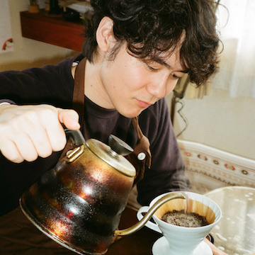

柘植 暁人
プログラミング勉強中です
プログラミング勉強中です
空所を使ってブロックを一つ一つ移動して最終的な配置に戻す簡単なゲームです。絵を３つ用意しています。お好きな絵で遊んでみてください。
やってみる0から順番に数字をクリックしていくゲームです。クリアするごとにパネルが多くなり、難しくなります。
やってみるタイピングゲームです。練習するとタイピングが早くなると言われるアイウエオ表がローマ字になってランダムに出てきます。最終的には手元を隠してやってみましょう。タイムアタック機能も実装しているので、成長が目に見えてわかります。
やってみるよくあるスロットマシーンです。パチンコ店に行かなくても無料で何回でもできますよ。（絵が揃ってもメダルはもらえません）
やってみるシンプルなストップウォッチです。ゲームや漫画等で日々費やしているご自身の無駄な時間を測ってみてください。
やってみる人気漫才コンビのネタを元に、ボケに対して正しいツッコミをクイズ形式で答えるゲームです。
やってみる